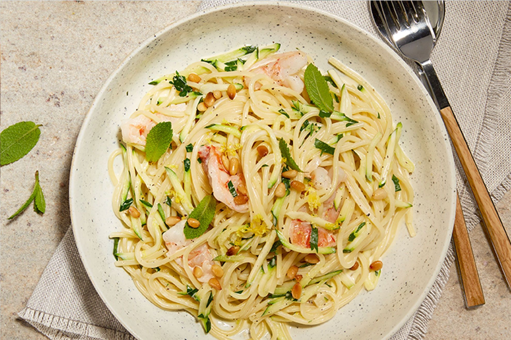

Go Back Home
Prawn and Zucchini Noodle Stir-Fry with Wilted Rocket

Image credits to Taste
Description
Carbless prawn noodle for a quick dinner
Prep time: 10 minutes, Cook time: 8-10 minutes, Serving: 1
Ingredients
- 150-180g raw peeled prawns
- 1 medium zucchini, spiralized or peeled innto thin ribbons, noodles
- 1/2 Cup halved cherry tomatoes
- 1-1.5 Cups rocket leaves
- 1-2 cloves garlic, minced
- Pinch of chilli flakes
- olive oil, fresh lemon juice, salt and black pepper to taste
Steps
- Pat the prawns dry and season lightlty with salt and pepper. Heat 1 tsp of olive oil in a large non-stick pan over medium0high heat. Add th eprawns in a single layer, and cook for 1-2 minutes per side until pink and opaque. Transfer to a plate so they don't overcook.
- In the same pan over medium heat, add the minced garlic, chilli flakes am dcherry tomaties. Cook for 1-2 minutes until the garlic is fragrant and the tomatoes begin to soften.
- Add the zucchini noodles and toss quickly for 1-2 minutes until just tender-crisp. Avoid overcooking so they don't release too much water. Remove the pan from the heat, return the prawns and fold in the rocket and lemon juice for 30 seconds until the rocket wilts gently and loses its raw sharpness.
- Plate right away with cracked black pepper and a final squeeze of lemon.